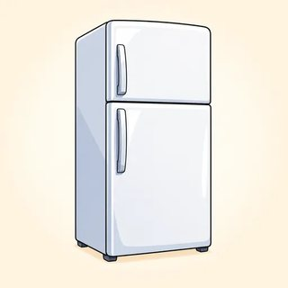

Precision Grammar — Classroom Materials
Everything to print for Classes C14–C16: service picture cards and grammar cards, the project and character cards with the timeline frame, the Errand Week information gap, the Services & Errands role-play cards, the class survey cards with the tally sheet, report frame and "Our class in numbers" poster, the Precision Path board game, and the teacher's listening scripts.
What to Print
| Set | What | How many | Used in |
|---|---|---|---|
| A | Flashcards: 12 service pictures · future markers · causative patterns · determiners | 1 set for the board | C14, C15, C16 |
| B | Project cards (6) + character cards (4) + timeline frame | 1 card + 1 frame per group of 3 | C14 |
| C | Errand Week information gap (A / B) | 1 pair per 2 learners | C15 |
| D | Services & Errands role-play cards (8 scenarios, A / B) | 1 set per class (2 sets for 16+ learners) | C15 |
| E | Class survey cards (12) + tally sheet + report frame + "Our class in numbers" poster | 1 card + 1 tally sheet per pair · 1 poster (enlarge) | C16 |
| F | Game: Precision Path board game | 1 board per group of 3–4 + a die or coin + counters | C16 warmer (and any spare 10 minutes) |
| G | Listening & dictation scripts | Teacher only | C14, C15, C16 |
A · Flashcards — Everyday Services (5.2)
Hold up a card for the drill: learners say the causative ("I had my car serviced"). Then use the tense ladder: "every year → right now → last week → just → next week → should."



A · Flashcards — Grammar Cards (5.1 · 5.2 · 5.3)
5.1: stick the marker cards in two columns (continuous / perfect). 5.2: the three recipe cards go in a row on the board. 5.3: the determiner cards go on the 100% → 0% scale.
B · Project Timeline — Project & Character Cards (5.1)
Groups of 3 choose one card. All the projects and people are invented. It is March now. Groups may add details. Each point on the timeline needs one will be + -ing idea (in progress) and one will have + p.p. idea (already done).
Riverside Community Center renovation
- End of March: new roof finished
- April: builders work on the kitchen
- By June 1 (summer program starts): classrooms painted, new computers arrive
- June 14, opening day: mayor cuts the ribbon at 10; free lunch from 11
- Next year: evening English classes, 20 volunteers trained
- In five years: 10,000 visitors
Maple Street Food Co-op
- April–June: volunteers build shelves, paint the store
- By August: 300 members signed up
- September 5: opening day; local farmers sell produce
- Next year: delivering groceries to seniors every Tuesday
- In five years: a second store on the east side
City Bike-Share launch
- April: testing 200 bikes on city streets
- By May 1: 50 stations installed
- May 15: launch day; free rides all weekend
- Next year: 1,000 riders a day; a new app
- In five years: electric bikes in every neighborhood
Hillside Clinic — new children's wing
- Construction continues until October
- By November: 12 new nurses and 3 doctors hired
- December 1: the new wing opens
- Next year: seeing 60 families a day; a free evening clinic on Thursdays
- In five years: a dental clinic added
Green Valley Market — the new shopping app
- April: 200 customers test the app
- By the launch (May 20): all cashiers trained; bugs fixed
- Launch week: staff helping customers download it in the store
- Next year: home delivery in three towns
- In five years: 50,000 users
Lincoln School library makeover
- July: painters and carpenters work all month
- By August 20: 3,000 new books and 20 tablets arrive
- September 3 (first day of school): library opens
- Next year: a family reading night every month
- In five years: every student has borrowed at least 50 books
Maya — trainee nurse
- May: final exams
- By June: training finished
- This time next year: working night shifts at the children's hospital
- In five years: running her own ward; teaching new nurses
Dev — starting a food truck
- Next month: buying a used truck; painting it bright orange
- By April 30: city license and food-safety test done
- This time next year: selling tacos downtown every lunchtime
- In five years: opened a small restaurant
Rosa — new city bus driver
- April–May: an 8-week training course
- By August: driving test passed
- This time next year: driving Route 12 across the city
- In five years: training new drivers
Sam — small web-design business
- Next month: building his first website, for a bakery
- By December: 10 clients
- This time next year: working from a shared office downtown
- In five years: hired two designers
Timeline frame (1 per group)
| When? | What will be happening? (will be + -ing) | What will already be done? (will have + p.p.) |
|---|---|---|
| next month | ||
| by the time… | ||
| this time next year | ||
| in five years' time |
Council / friends' questions: Will you be hiring…? · Will you be needing…? · Will you have finished… by…? · How long will you be…?
C · Errand Week — Information Gap (5.2)
Pairs. A asks about each job with the causative ("Did Sam get the flyers printed?"); B answers from the receipts and texts. Together, sort the jobs on the back of card A: did it himself · had it done · something went wrong · still needs to get it done. Then write 3 sentences for the last column. Answers are in the Answer Key.
- 🚗 car: oil change + check the brakes (noisy!)
- 📄 200 flyers for the block party
- 🚰 kitchen faucet: dripping
- 💇 haircut before Saturday's wedding
- 👖 new suit pants: too long
- 🔑 spare key for Mom
- 🪪 photo for the new work ID badge
- 🚲 bike: flat tire
Ask B: "Did Sam get / have his … ?" · "Who did it?" · "When?"
🧾 Joe's Auto · Mon May 6 · Oil change $49.99 · Brake inspection: brakes OK
🧾 QuickPrint · Tue May 7 · 200 color flyers $80.00
💬 Wed: "Fixed the faucet myself! YouTube!"
🧾 Hardware Hub key counter · Thu May 9 · 1 key copy $3.50
💬 Thu: "Alterations shop closed for vacation until the 20th 😩 Wedding is Saturday!"
💬 Thu: "Took the bike to Pedal Power. Ready Monday."
💬 Fri: "Got my car towed from the store parking lot. Ugh. $150."
📅 Sat 9:00 Tony's Barber
Answer A. Nothing about the ID photo? Then he hasn't done it yet.
| did it himself | had it done | something went wrong | still needs to get it done |
|---|---|---|---|
3 sentences: He still needs to
D · Services & Errands — Role-Play Cards (5.2)
Cut A and B apart. A (customer): arrange two things with the causative, ask when it will be ready (Will you have finished by…?), and ask one polite question (Will you be…?). B (service provider): use your information and explain the problem clearly. 4 minutes per round, then swap roles and cards. All businesses are invented.
Customer phrase bank: I'd like to have / get my … + p.p. · Could you also…? · How much will it be? · Will you have finished by…? · Will you be calling me when it's ready? · Could I have it done by…? Provider: We'll have to order… · We won't have finished until… · Will you be waiting here or coming back later?
Your brakes make a noise, and the oil change is late. You're driving to a family event on Saturday, so you need the car by Friday at 5 p.m.
Oil change: $50, 30 minutes. Brakes: the front brake pads are worn; you have to order new ones. They arrive Thursday. You'll have finished by Friday noon. Brakes: $220. Ask if they'll be waiting or coming back.
Your kitchen sink is leaking, and the bedroom window won't close. You work until 4 p.m. on weekdays. You want both fixed this week.
The plumber comes Tuesday 9–12; the window company comes Thursday morning. Nobody works after 4. You can let them in with your key if the tenant agrees. Ask: "Will you be home on Tuesday morning?"
You're going to a wedding on Saturday afternoon. You want your hair cut and colored (or your beard trimmed). Everything must be finished by noon.
Saturday openings: 9:00 and 11:30. Cut: 45 minutes, $35. Color: 2 hours, $80. Beard trim: 15 minutes, $15. (Cut + color at 11:30 won't have finished by noon!)
You need 150 color flyers for a community yard sale and 20 copies of a sign-up sheet. You need them by Thursday morning.
Color flyers: 40¢ each. Black-and-white copies: 10¢ each. Your color printer is being repaired today, so color will be ready Wednesday afternoon. You can deliver for $10. Ask: "Will you be picking them up?"
Your phone screen is cracked, and the battery dies by lunchtime. You need your phone for work tomorrow morning.
Screen: $89, 1 hour. Battery: you must order it; it arrives in two days, 30 minutes to install, $45. You have loaner phones. Ask: "Will you be needing a loaner phone?"
Your new suit pants are too long, and the jacket sleeves are too long. The wedding is in five days.
Hem pants: $15, 2 days. Shorten sleeves: $30, usually one week. Rush service (+$10): finished in 3 days. Ask: "Will you be coming in for a fitting first?"
Your jacket has a coffee stain and a missing button. You have a job interview on Monday morning.
Dry-cleaning: $12, ready Saturday. The stain may not come out completely. Your tailor can sew on a new button: $5, same day. Ask: "Will you be needing it pressed as well?"
You need 3 copies of your apartment key and a copy of your mailbox key. You'd also like a new lock put on your garden shed.
Key copies: $3.50 each, 5 minutes. Mailbox keys: you can't copy them (the building manager or the post office must do it). Locks: $25; your locksmith installs them on Wednesdays ($40). Ask: "Will you be paying by card?"
E · Class Survey & Report (5.3)
One card per pair; every pair has a different question. Ask everyone (the teacher too), tally, add up, report. No names. "Pass" is an answer and gets its own column. Keep every question light.
Did you have breakfast today?
Yes · No · Pass
How do you usually get to class?
bus / train · car · bike · on foot · Pass
Have you ever had your hair cut by a friend or family member?
Yes · No · Pass
Do you drink coffee, tea, both, or neither?
coffee · tea · both · neither · Pass
Do you listen to anything in English during the week (music, podcasts, videos)?
Yes · No · Pass
Can you cook rice without a recipe?
Yes · No · Pass
Do you prefer phone calls or text messages?
calls · texts · no preference · Pass
Have you ever had a phone screen repaired?
Yes · No · Pass
Do you like spicy food?
love it · a little · no · Pass
Do you read the news every day?
on my phone · on paper / TV · not every day · Pass
Can you ride a bike?
Yes · No · Pass
Are you a morning person or an evening person?
morning · evening · neither · Pass
Tally sheet (1 per pair)
| Answer | Tally |||| | Total |
|---|---|---|
| Pass | ||
| Total (= people in the room?) |
- We asked every person in the class whether / how / if ______.
- All of us / Most of us / About half of us / A few of us / None of us ______.
- Only one of us ______. (no names!) · ______ of us preferred not to say.
- Each ______ + singular verb.
- In our pair, both of us ______ / neither of us ______ (+ singular verb) / either ______.
- Upgrades: the majority of us · just over half of us · only a handful of us · not a single person · the whole class
"Our class in numbers" poster (enlarge to A3 / tabloid, or copy onto the board)
| 📊 Our class in numbers · Class C16 · ____ people | |
|---|---|
| 1 | |
| 2 | |
| 3 | |
| 4 | |
| 5 | |
| 6 | |
| 7 | |
| 8 | |
Each pair writes its best sentence. Check the verb together before it goes up. Keep the poster on the wall for the C17 warmer.
F · Game — Precision Path (review of 5.1 & 5.2)
- Groups of 3–4. Counters on START. Roll a die (or flip a coin: heads = 1, tails = 2). Move.
- Do the task on your square: ⏩ finish the sentence · 🧰 use the causative · ✘ fix the mistake · 🎤 talk for 30 seconds. Real, a card person, or invented: all OK.
- The group decides: correct? Stay. Not quite? Go back to where you were. The teacher settles arguments (answers in the Answer Key).
- ⭐ squares: follow the instruction. The first player to FINISH, or the player furthest along when time is up, wins.
- Fair play: a player who answers for someone else goes back 1.
| 1 START ▶ |
2 ⏩"This time tomorrow, I…" (will be + -ing) | 3 ✘"By the time you will arrive, we'll have eaten." | 4 🧰A mechanic changed your oil yesterday. Say it with the causative. | 5 ⏩"By the end of this year, the city…" (will have + p.p.) | 6 🎤30 seconds: three things you (or a card person) have done regularly. |
| 12 🧰Finish: "I finally got my landlord…" | 11 ⏩The restaurant opens at 8. "At 9 p.m. we ___ (eat)." | 10 🧰Service or misfortune? "She had her bike stolen." | 9 ⭐Move ahead 2! | 8 ⏩Make it polite: "Will you use the meeting room at two?" | 7 ✘"I had repaired my phone at the mall." (someone else did it) |
| 13 ✘"I'll have finished the report until Friday." | 14 🎤30 seconds: your C14 project. What will be happening this time next year? | 15 🧰A translator translated our menu. Say it with have and with get. | 16 ⏩"By the time the movie ends, …" | 17 ✘"The hotel will have the porter to bring your bags." | 18 ⭐Ask the player on your left a "Will you be…?" question. They answer. |
| 24 🎉 FINISH |
23 🎤30 seconds: an errand you (or a card person) need to get done this week. | 22 🧰Your kitchen looks new. Did you paint it or have it painted? Say which and why. | 21 ✘"In 2030 I will finished my training." | 20 ⏩"In five years' time, the character on the card…" | 19 🧰Make it past: "I'm having my hair cut." |
The path snakes: follow the numbers (row 1 left → right, row 2 right → left, and so on).
G · Listening & Dictation Scripts (teacher reads aloud)
Read at a natural speed, with contractions (we'll have, they'll be, I'm having), because that is what learners hear outside class. Read each script twice: once for the main idea, once to check. For the voicemails, hold a phone to your ear. The 🔊 buttons in the online lessons give learners extra listening at home.
5.1-A · Lena's project update (Workbook 5.1, Ex 1)
Answers: 1 will have finished · 2 will be working · 3 starts · 4 will have painted · 5 will have arrived · 6 will be cutting · 7 will be serving · 8 Will you be coming. Follow-up: "Is the project on schedule?" (Ahead of schedule.) "What will they be doing this time next year?" (Running evening English classes, she hopes.)
5.1-B · Dictation (read each sentence 3 times)
Check: get (present) in 1 · have written in full or as 'll have in 1 and 4, never "of."
5.2-A · Marco's busy Saturday (Workbook 5.2, Ex 1)
Answers: 1 serviced · 2 tires · 3 printed · 4 made · 5 cut · 6 to fix · 7 look · 8 Marco did it himself. Follow-up: "Why did he say 'finally got'?" (It took effort to persuade the manager.)
5.2-B · Dictation (read each sentence 3 times)
Check: the -ed endings (replaced, painted, canceled) and to in 4. Ask: "Which sentence is a misfortune?" (3)
5.3-A · The staff survey (Workbook 5.3, Ex 5; also the model for the class report)
Answers: 1 All · 2 Most · 3 Each · 4 None · 5 Neither · 6 Every · whole · 7 Both. Point out: "None of you want" (everyday plural, fine in speech) · "neither option was" · "every team leader has."
5.3-B · Dictation (read each sentence 3 times)
Check: singular has / is in 1–2 · of the in 3 · whole spelled with a silent w in 4.